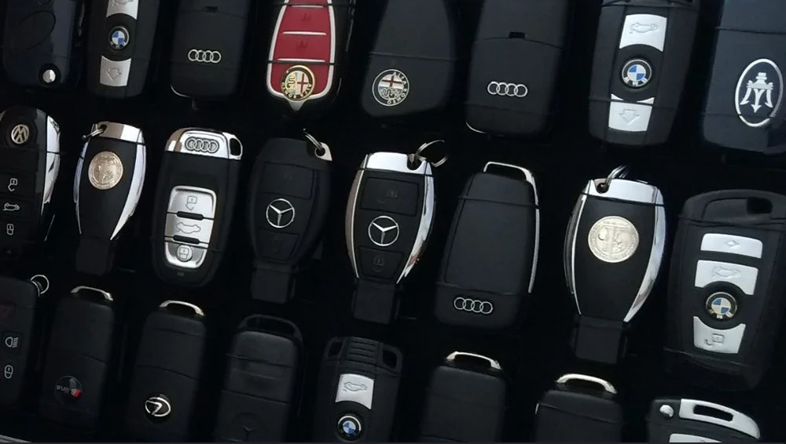
HISTORIA
Historias vivas • Leyendas automotrices
Cada vehículo cuenta una historia de pasión, ingeniería y la búsqueda incansable de la excelencia.
Leyendas que merecen ser contadas
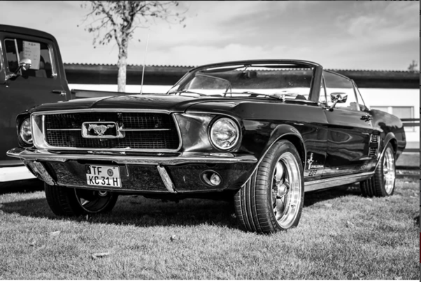
Ford Mustang Hardtop 1965
El automóvil que definió una generación y creó el segmento de los pony cars. Un ícono de la cultura americana que combinó estilo accesible con performance emocionante... Ver más...
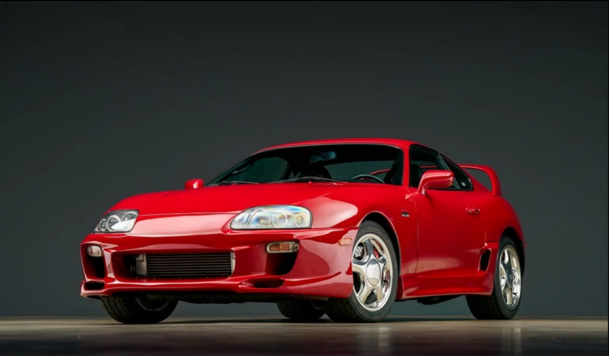
Toyota Supra MK4
El 2JZ-GTE se convirtió en leyenda por su capacidad de manejar más de 1000 caballos de fuerza. El Supra MK4 definió la era dorada de los autos japoneses de los 90... Ver más...
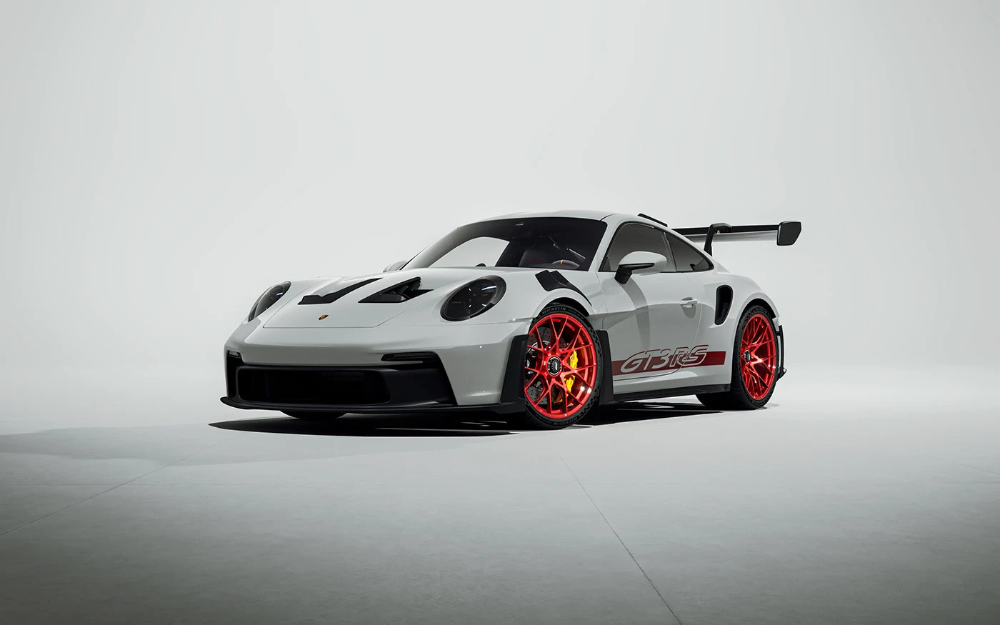
Porsche 911 GT3
La evolución definitiva del 911 para circuito. Motor atmosférico de alta revolución, transmisión PDK de 7 velocidades y aerodinámica activa... Ver más...
Encuentra tu pasión
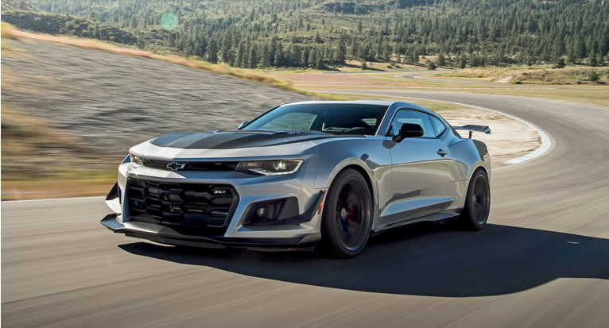
Chevrolet Camaro ZL1
Chevrolet
650 caballos de potencia americana pura...
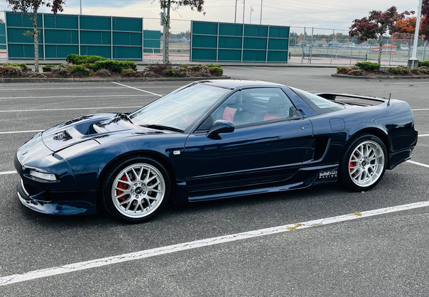
Honda NSX
Honda
El supercar japonés que cambió el paradigma...
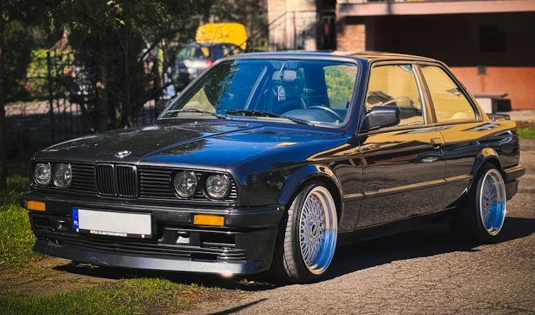
BMW M3 E30
BMW
El sedán que dominó los circuitos mundiales...
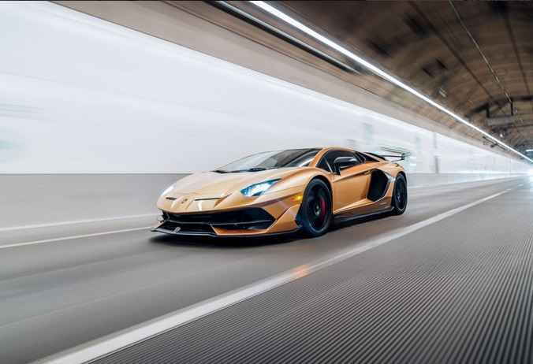
Lamborghini Aventador
Lamborghini
V12 naturalmente aspirado en su máxima expresión...
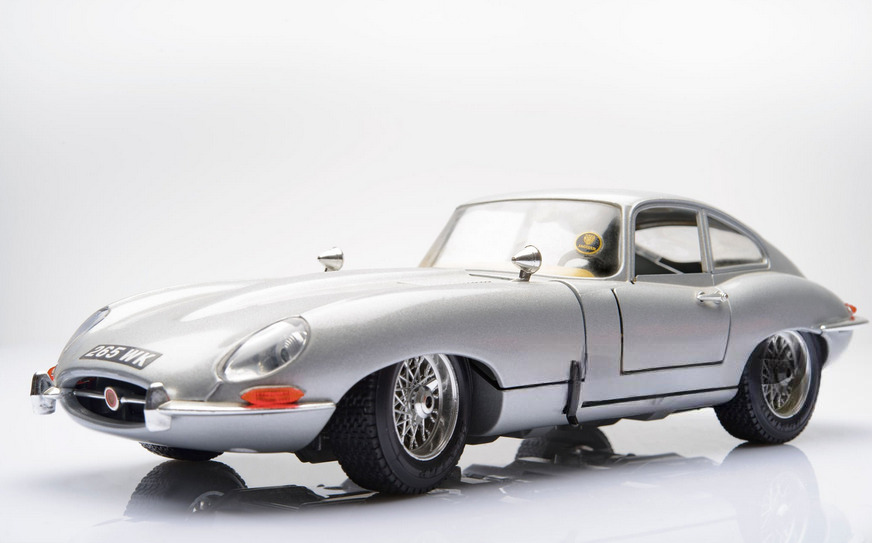
Jaguar E-Type
Jaguar
El auto más hermoso del mundo según Enzo Ferrari...
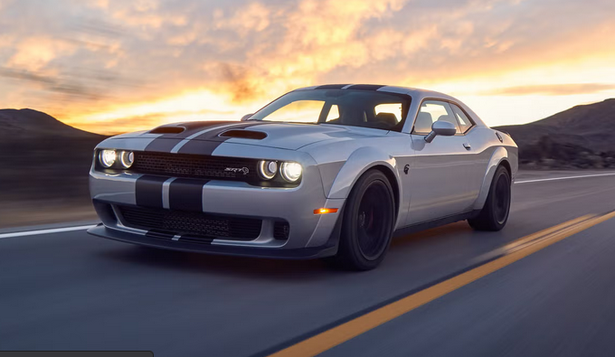
Dodge Challenger SRT
Dodge
El demonio de 797 caballos de fuerza...
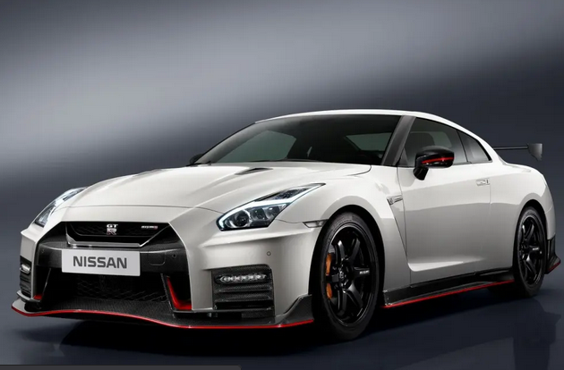
Nissan GT-R R35
Nissan
Godzilla: el supercar japonés que desafió a europeos...
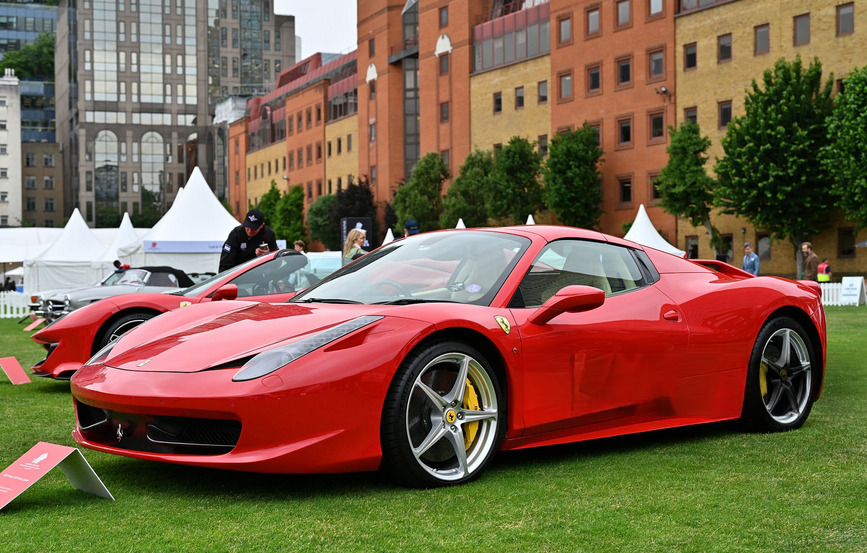
Ferrari 458 Italia
Ferrari
El V8 atmosférico más perfecto jamás creado...
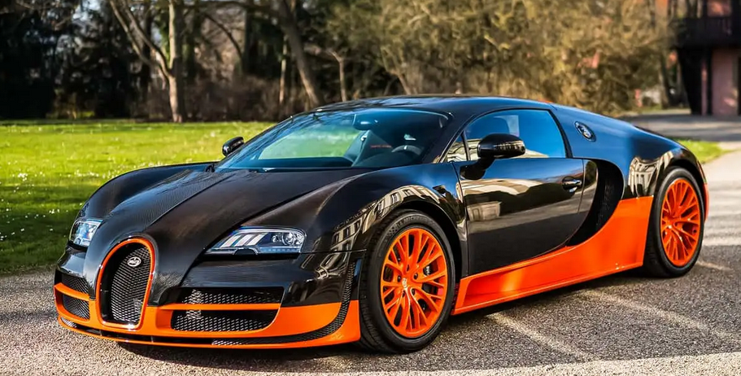
Bugatti Veyron
Bugatti
El primer auto de producción en superar 400 km/h...
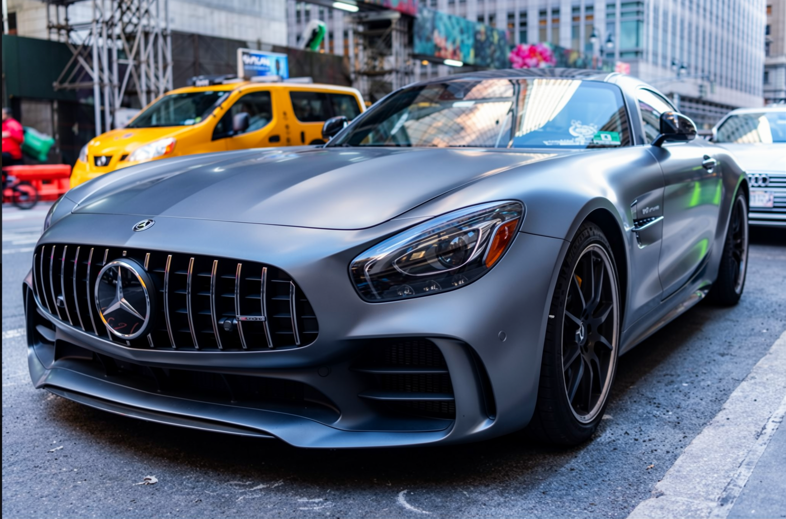
Mercedes AMG GT
Mercedes
El heredero espiritual del SLS AMG...
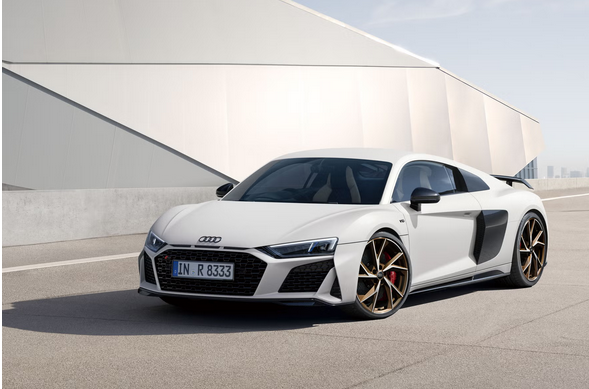
Audi R8
Audi
Tecnología de Fórmula 1 en las calles...
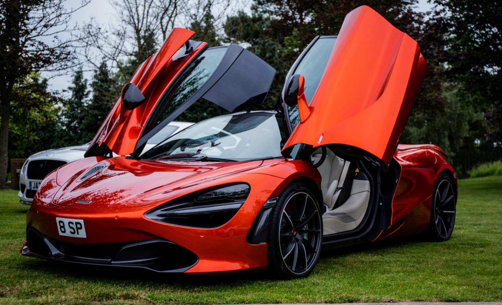
McLaren 720S
McLaren
El supercar más completo del mundo...
"Un automóvil no es solo una máquina. Es el resultado de la pasión, la ingeniería y el arte de quienes lo soñaron. En nuestra colección, cada vehículo tiene una historia que merece ser preservada."